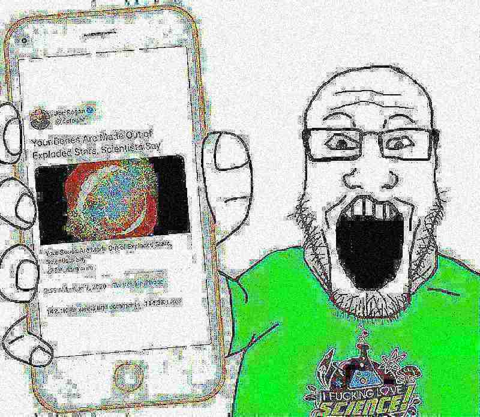

July 3rd, 2022 — Josh
I grew up in a world in which it seemed like like we already knew the answers to all of the questions. Instead of being told about the sorts of ongoing problems and unknowns my generation of children could potentially grapple with throughout our lifetime, the most existential thing we were presented with was "what do you want to be when you grow up?". That didn't change as I got older, travelling from stage to stage through the pipeline directing me towards keeping our hamster wheel society spinning. Well, I'm just about grown up now, and I'm sure I've done much more harm than good to our planet since I've gotten here. That probably applies to most of us, because we're raised in an absurd environment, steeped in nonsense, taught to exert ourselves in contexts that don't matter and dissociate when confronted with the ones that do.
At least they let us believe in aliens. Does anybody else remember being an edgy atheist in middle school, not being able to tell what all the fuss was about when clearly science had all the answers --

Anyways, things can be different. We don't all have to suffer day in and day out. Many things we take for granted as normal in our society aren't, they're not fundamental rules, they should be examined regularly. Most importantly, we shouldn't raise our children without making this clear to them.
I'm trying to escape from this now. Maybe not literally though.... As much as I want to retreat to a forest, we all need help. Plus if we continue at this rate that might no longer be an option at some point in time : ). So instead, please join me in figuring out what it is that we can do to make everybody happier, and to make our lifestyle less fucked up.
Here is a growing list of things that have been helpful for me:
In general, existentialist media always helps me "snap out of it". Especially, I'm really affected by Andrei Tarkovsky's movies, because they remind me of my childhood spirit which I sometimes lose.